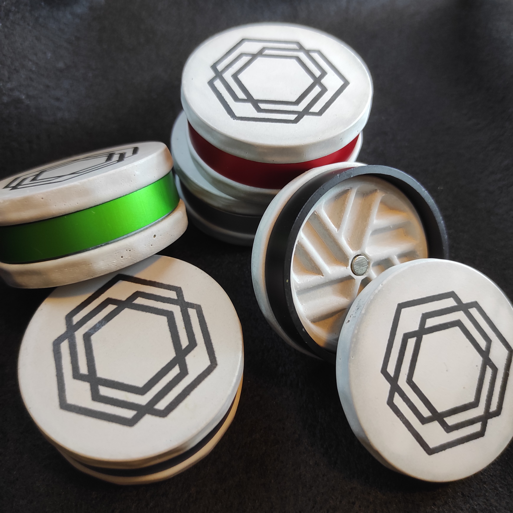
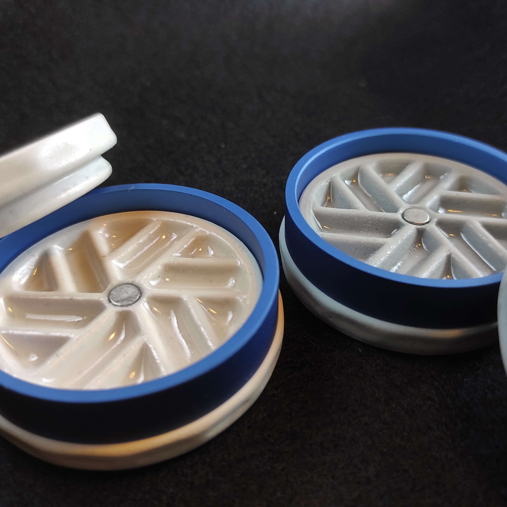
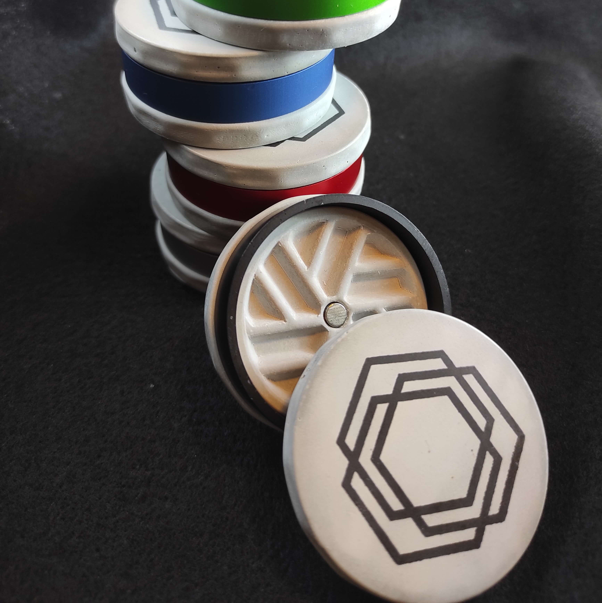
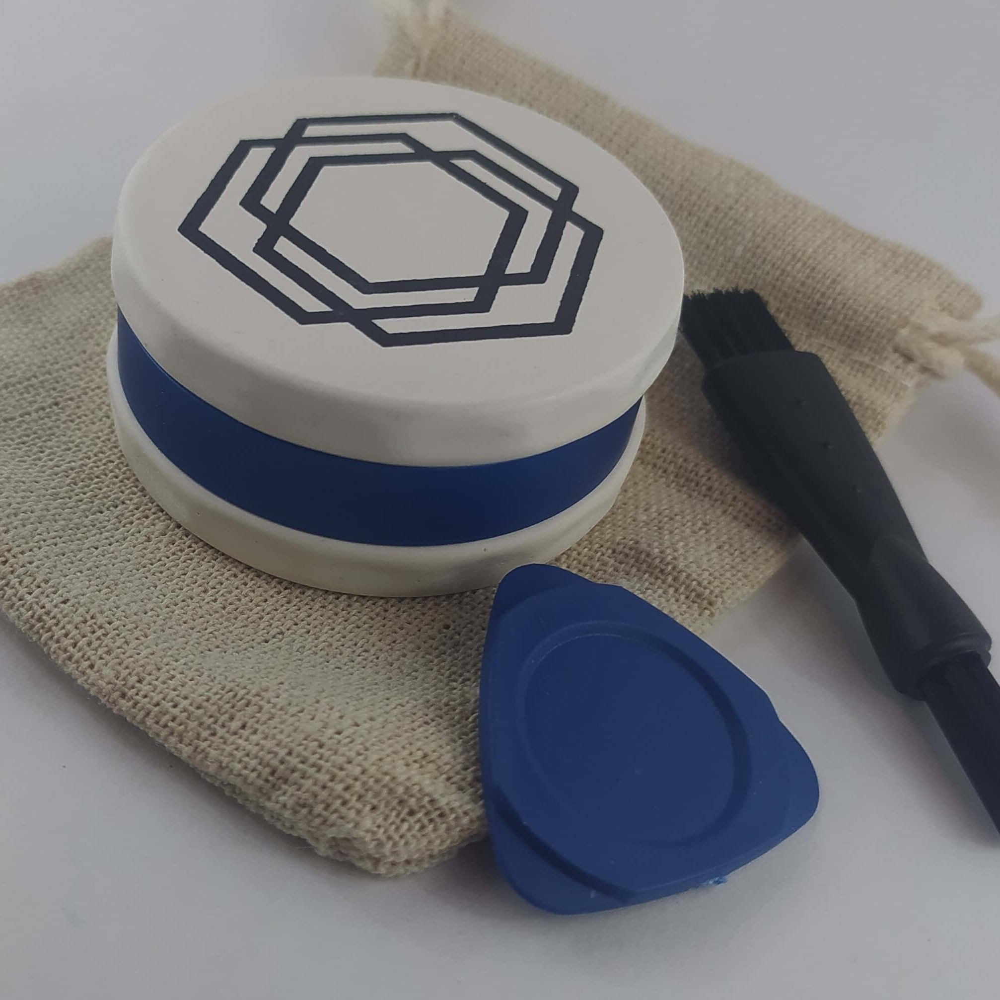

Millstone

Why is it called that?
It looks - and works - as an ond-school millstone
Grind your herb effortlessly
It's simple to use, and easy to clean
Every grinder is hand-made
It's a gadget as well as a piece of art
You can discover much more about it below,
or simply visit my store - it's ready to be shipped!
Features
What makes it stand out among the rest of the grinders?
Doesn't get clogged easily
Over time, residue builds up at the edge of the grinder, making it hard to turn. But that's not the case here, thanks to unique design and materials.
The herb falls out easily
The grooves do a good job grinding the herb, and as a bonus, the herb falls out of the grinder easily, since there are no sharp corners the herb could stick to.
Get a fine grind quickly and effortlessly
The grinder produces a fine, smooth and consistent grind in just a few turns.
Easy to clean
The grooves' smooth features also make it easier to clean. Also, each grinder comes with cleaning accessories.

Product breakdown




Design
The grinder's design is its most defining feature: nice and simple on the outside, and quite unique on the inside. Instead of using teeth to grind the herb, like most grinders do, this grinder uses grooves to grind the terb.
This may seem counter-intuitive on the first glance, but in reality it works even better than the old way. The result you get is a fine, smooth and consistent grid in as little as five turns.

Material
To make this grinder, I combined common materials with something a bit more unique. The grinder is mainy made of a material called type IV plaster. The best way to quickly describe it would be calling it fancy concrete. Concrete and plaster both have a lot of similar properties, but the type IV plaster simply feels and looks more premium.
To protect the plaster from the elements, it is coated with acrylic lacquer on the outside, and with epoxy resin on the inside. The resin also protects the grinder from wear, and makes the inner surfaces smoother for better grinding and less sticking.
Millstone is made of:
Type IV plaster | The grinder's main material
Epoxy resin | Certified food-safe coating of the inner surfaces
Anodized aluminium | Grinder's mid-section, durable and colorful
Acrylic lacquer | A thin coating to protect the outer surfaces
Rubber O-ring | Holds the anodized aluminium band in place
Neodynium magnet | Holds the two pieces together
Paper ink | Stamped logo on the top surface
Contact
If you have any questions or suggestions about the product, feel free to contact us.
We are also looking to cooperate with various people to get our product into the world. Whether you're a store owner, an influencer, or just someone with a wish to collaborate, we'd live to hear from you!
Write us at
hello@albatrog.com
Follow us on social media, or check our store on Etsy.